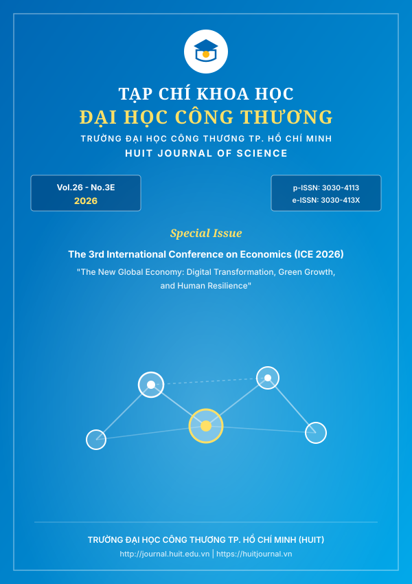

Số chuyên đề đặc biệt xuất bản các công trình nghiên cứu chọn lọc từ Hội thảo Khoa học Quốc tế lần thứ 3 về Kinh tế (ICE 2026), tập trung vào các vấn đề: Chuyển đổi số, Kinh tế tuần hoàn, Tài chính và Phát triển bền vững.